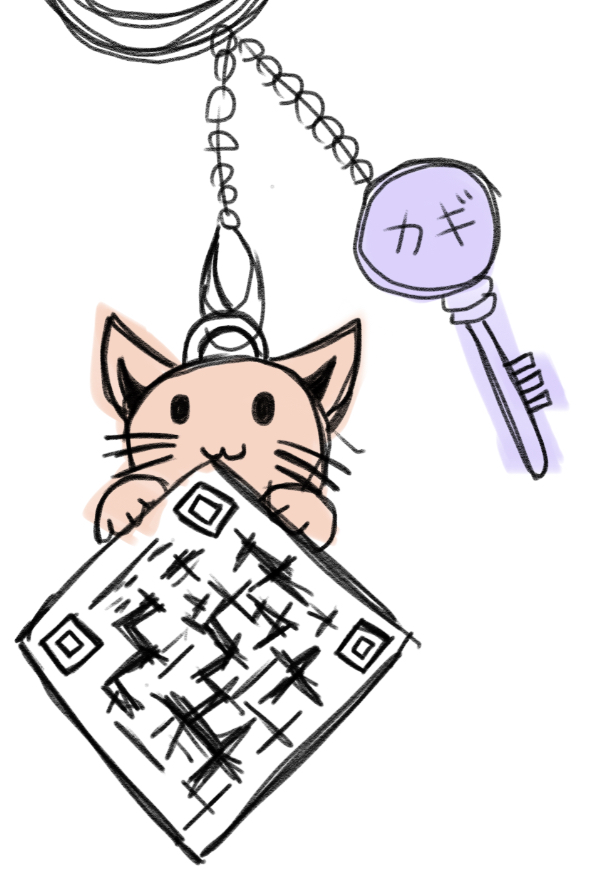
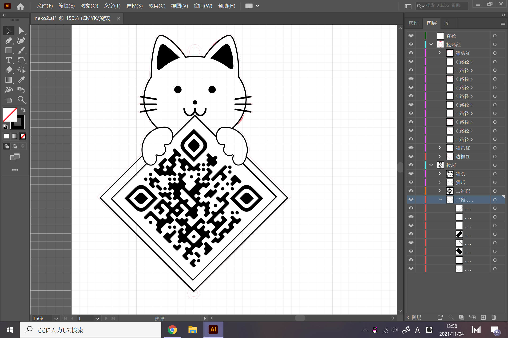
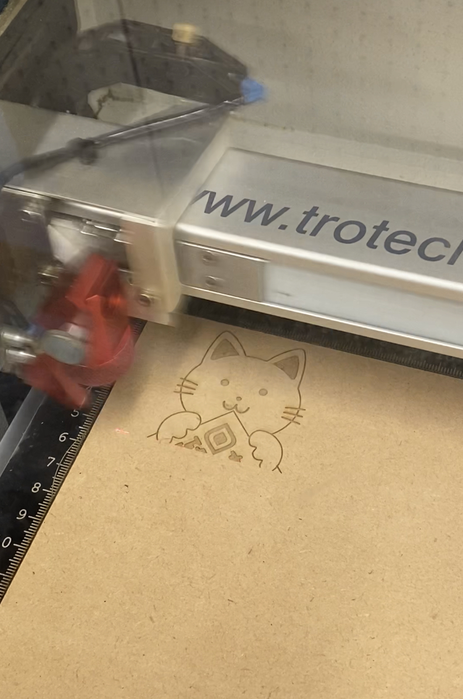
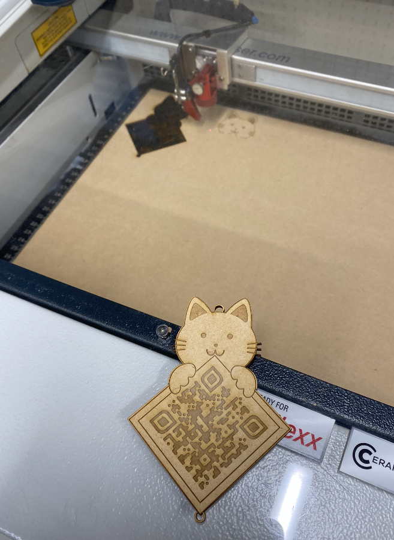
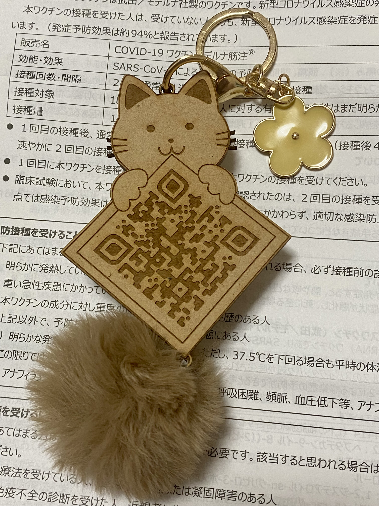

第二回：レーザー加工機
１．アイデア
本能レベルで面白いと感じるものというと…
レーザー加工による作ったＱＲコードはどうですか…？(=^・^=)
理想↓（キーホルダーのようなアクセサリー）

これは名刺のような作用があります。例えば…
「ｘｘと申します！職業は、ウェブデザイナーです。よければ私のホームページをご覧ください☆（出します）」
このように、可愛いネコと優秀なウェブサイトで一撃で相手の心を動かします！
２．過程
AdobeIllustratorでスケッチします

レーザー加工中～

できました！

３．作品
アクセサリーにしました！そして、よければスキャンしてみてください…！

４．感想
デザインは意外と簡単でした。このように、誰でも手軽に自分のＱＲコードを作成できると思います。イラストをかわいい猫にしましたけど、効果がありますかな…皆さんいかがですか？スキャンしてみませんか(;・∀・)